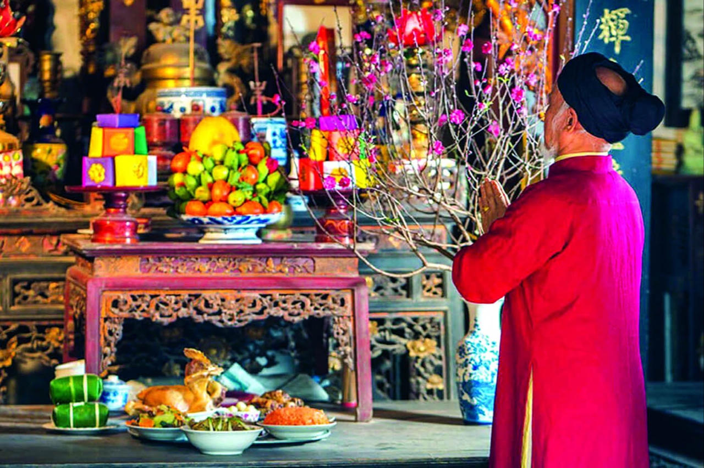
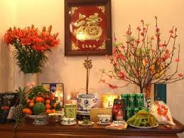
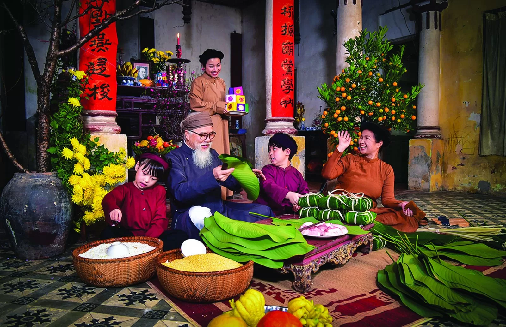
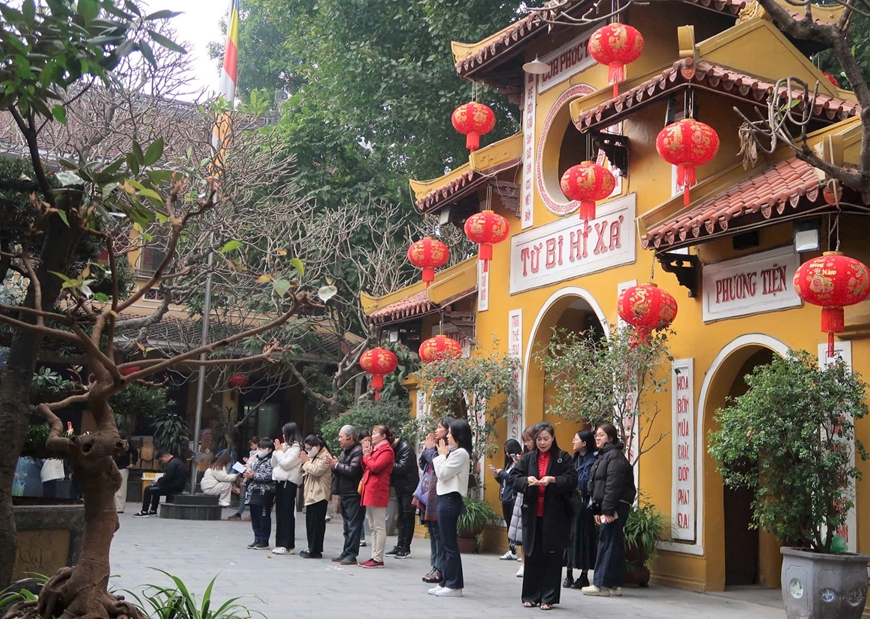
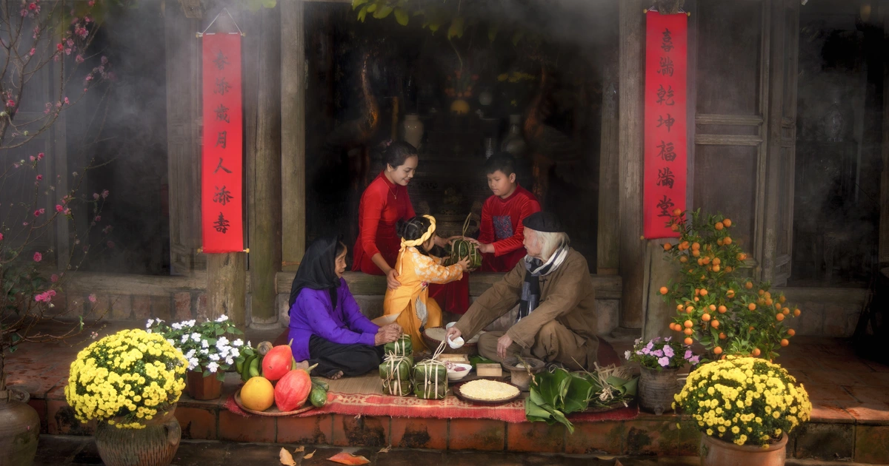
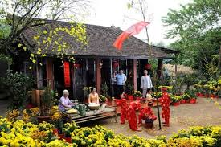

Ý Nghĩa
- Tưởng nhớ tổ tiên thể hiện đạo lý " uống nước nhớ nguồn" qua đó thể hiện lòng hiếu thảo với ông bà cha mẹ qua việc dâng hương cúng tổ tiên.


- Giữ gìn văn hóa dân tộc duy trì và truyền lại những phong tục đẹp đẽ cho thế hệ mai sau giữ gìn bản sắc văn hóa Việt Nam trường tồn.


- Tết Nguyên Đán là dịp để mọi người xung họp cuối cùng bên nhau sau một năm bận rộn chia sẻ niềm vui.

